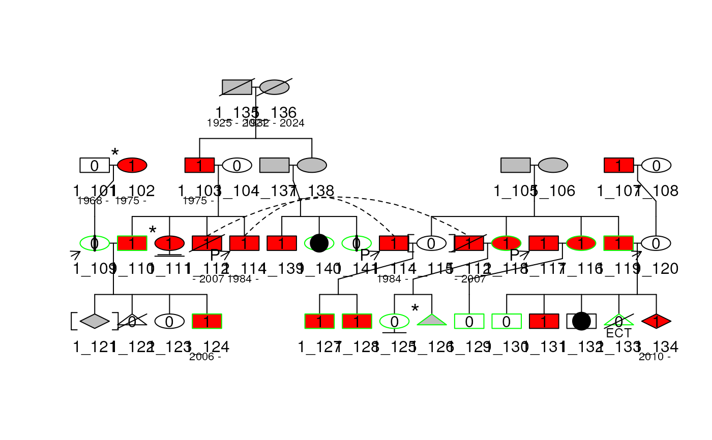

Convert a Pedigree to a data frame with all the elements and their
characteristic for them to be plotted afterwards with
plot_fromdf().
Arguments
- obj
A Pedigree object
- ...
Other arguments passed to
par()- packed
Should the Pedigree be compressed. (i.e. allow diagonal lines connecting parents to children in order to have a smaller overall width for the plot.)
- width
For a packed output, the minimum width of the plot, in inches.
- align
For a packed Pedigree, align children under parents
TRUE, to the extent possible given the page width, or align to to the left marginFALSE. This argument can be a two element vector, giving the alignment parameters, or a logical value. IfTRUE, the default isc(1.5, 2), or if numeric the routinealignped4()will be called.- align_parents
If
align_parents = TRUE, go one step further and try to make both parents of each child have the same depth. (This is not always possible). It helps the drawing program by lining up pedigrees that 'join in the middle' via a marriage.- force
If
force = TRUE, the function will return the depth minusmin(depth)ifdepthreach a state with no founders is not possible.- cex
Character expansion of the text
- symbolsize
Size of the symbols
- pconnect
When connecting parent to children the program will try to make the connecting line as close to vertical as possible, subject to it lying inside the endpoints of the line that connects the children by at least
pconnectpeople. Setting this option to a large number will force the line to connect at the midpoint of the children.- branch
defines how much angle is used to connect various levels of nuclear families.
- aff_mark
If
TRUE, add a aff_mark to each box corresponding to the value of the affection column for each filling scale.- id_lab
The column name of the id for each individuals.
- label
If not
NULL, add a label to each box under the id corresponding to the value of the column given.- precision
The number of decimal places to round the solution to.
- lwd
default=par("lwd"). Controls the line width of the segments, arcs and polygons.
Details
The data frame contains the following columns:
x0,y0,x1,y1: coordinates of the elementstype: type of the elementsfill: fill color of the elementsborder: border color of the elementsangle: angle of the shading of the elementsdensity: density of the shading of the elementscex: size of the elementslabel: label of the elementstips: tips of the elements (used for the tooltips)adjx: horizontal text adjustment of the labelsadjy: vertical text adjustment of the labels
All those columns are used by
plot_fromdf() to plot the graph.
Examples
data(sampleped)
ped1 <- Pedigree(sampleped[sampleped$famid == 1,])
plot_df <- ped_to_plotdf(ped1)
summary(plot_df$df)
#> id x0 y0 x1
#> Length:212 Min. : 0.000 Min. :1.000 Min. : 0.000
#> Class :character 1st Qu.: 3.000 1st Qu.:2.487 1st Qu.: 3.331
#> Mode :character Median : 7.000 Median :3.091 Median : 7.505
#> Mean : 7.296 Mean :3.090 Mean : 7.641
#> 3rd Qu.:11.750 3rd Qu.:4.000 3rd Qu.:11.831
#> Max. :15.010 Max. :4.275 Max. :15.010
#> NA's :126
#> y1 type fill border
#> Min. :1.091 Length:212 Length:212 Length:212
#> 1st Qu.:2.355 Class :character Class :character Class :character
#> Median :2.750 Mode :character Mode :character Mode :character
#> Mean :2.875
#> 3rd Qu.:3.552
#> Max. :3.750
#> NA's :126
#> angle density cex label tips
#> Min. : NA Min. : NA Min. :1 Length:212 Length:212
#> 1st Qu.: NA 1st Qu.: NA 1st Qu.:1 Class :character Class :character
#> Median : NA Median : NA Median :1 Mode :character Mode :character
#> Mean :NaN Mean :NaN Mean :1
#> 3rd Qu.: NA 3rd Qu.: NA 3rd Qu.:1
#> Max. : NA Max. : NA Max. :1
#> NA's :212 NA's :212
#> adjx adjy
#> Min. :0.5 Min. :0.5
#> 1st Qu.:0.5 1st Qu.:0.5
#> Median :0.5 Median :0.5
#> Mean :0.5 Mean :0.5
#> 3rd Qu.:0.5 3rd Qu.:0.5
#> Max. :0.5 Max. :0.5
#> NA's :128 NA's :128
plot_fromdf(plot_df$df, usr = plot_df$par_usr$usr,
boxh = plot_df$par_usr$boxh, boxw = plot_df$par_usr$boxw
)
